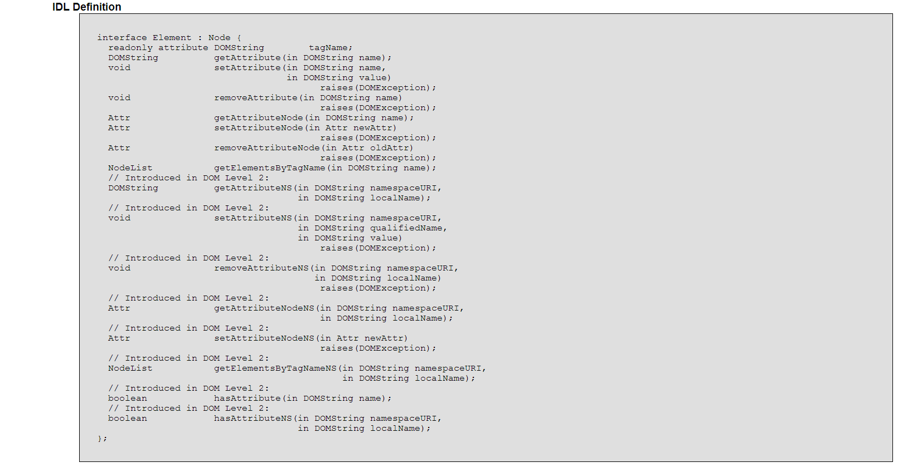

JavaScript Temelleri
Bölüm 19
W3C Belge Nesne Modeli (W3C Document Object Model) (W3C-DOM)
Bölüm 19.6.7 Sayfa 1
19.6.7 - Element Arabirimi

Şekil 19.6.7 - 1 - DOM Düzey 2 de Element Arabiriminin IDL Yazılımı
Bu arayüzde tanımlanan Element arayüzü belge içindeki bir HTML veya XML elementinin oluşturduğu bir düğümün özelliklerini tanımlar. Şekil 19.2 - 4 deki kalıtım şeması incelendiğinde, Element düğümününün, generik düğüm tipi olan Node düğüm türünün bir alt türü olduğu görülür. Bu nedenle, Element arabirimi, Node arabiriminin özelliklerini kalıtım yolu ile elde eder ve bu şekilde Element arabirimi özelliklerine, ister bu arabirimdeki, istenirse bir üst düzey Node arabirimin özellikleri kullanılarak ulaşılabilir.
Element arayüzü, yeni nitelik değeri okuma ve belirtme (get and set) metotlarını içerir. Bunlardan ilki DOMString tipi bir karakter dizigisi değer döndüren getAttribute(DOMString tipinde nitelikİsmi) şeklinde uygulanan mettottur. Diğeri nitelik değeri belirten setAttribute(DOMString tipinde nitelikİsmi) metodudur. Bu iki metodun çok pratik olması diğer nitelik erişim metotlarına göre avantaj sağlamaktadır.
Element arabiriminin tagName özelliği, erişilen Element tipi düğümün hangi elemente ait olduğunu belirten özelliktir. Bu özellik salt okunur niteliktedir ve geriye karakter dizgisi (DOMString) tipi bir değer döndürür. Bu özellğin uygulandığı bir programın kodları aşağıda görülmekte ve sonucu bağlı olduğu sayfada görüntülenmektedir.
/* <![CDATA[ */ function başlat() { var elementDüğümü = document.getElementById('hedef'), sonuç = document.createElement('P'); sonuç.setAttribute('class') = 'cursive-blue'; sonuç.appendChild(document.createTextNode('Element Düğümünün Adı : ' + elementDüğümü.tagName)); elementDüğümü.appendChild(sonuç); } sayfaYüklenmesiTamamlandıktanSonraÇalıştır(başlat); /* ]]> */
Element düğümünün, getAttribute() metodu, element düğümlerinin niteliklerinin value özelliklerinin değerini karakter dizigisi verisi olarak döndürür. Eğer, niteliğin değeri verilmemiş ve varsayılan bir değeri de yoksa, boş bir karakter dizigisi verisi döndürülür. Bu metot salt okunur karakterdedir ve nitelik değerlerine erişim için çok kullanışlı bir metottur. Günümüzde W3C-DOM yöntemlerinin uygulandığı programlarda hemen hemen sadece bu metotla element niteliklerine erişilmektedir.
Bu metot, kodları aşağıda görülen programda uygulanmıştır. Bu program, ilişikli olduğu sayfada çalışmaktadır.
/* <![CDATA[ */ function başlat() { var elementDüğümü = document.getElementById('hedef'), sonuç = document.createElement('P'), sınıf = elementDüğümü.getAttribute('class'); sonuç.setAttribute('class', 'cursive-blue'); sonuç.setAttribute('id', 'sonuç'); ardınaEkle(sonuç, elementDüğümü); sonuçYaz('Element Düğümünün class Nitelik Değeri : ', sınıf, 'sonuç'); } sayfaYüklenmesiTamamlandıktanSonraÇalıştır(başlat); /* ]]> */
W3C-DOM yöntemlerinin uygulandığı programlarda, setAttribute() metodunun önemi büyüktür. Bu metot, özellikle sayfaya yerleştirilmek için yeni oluşturulmakta olan bir element düğümüne yeni nitelikler eklenmesi için elde olan tek W3C-DOM yöntemidir. Bu metot geriye bir veri döndürmez ve eğer uygulanması istenen nitelik değerleri arasında uymsuz karakterler varsa veya, salt okunur bir niteliğe değer atanması bildiriliyorsa hata oluşur.
Bir elementin, sayfaya yerleştirilmek amacı ile yeni yaratılması sırasında varsayılan değeri olan niteliklerinden başka hiçbir niteliği yaratılmaz. DTD de #IMPLIED olarak belirtilen isteğe bağlı hiçbir nitelik varsayılan olarak yaratılmaz. Bunlar arasında çok kullanılan, 'class', 'id', 'style' gibi nitelikler de vardır. Bu nitelikler,açık (explicit) olarak değerleri atanarak nitelik düğümü haline getirilebilirler. Yeni eklenecek elementler için, Bu amaçla kullanılabilecek tek metot, setAttribute() metodudur.
Element arabiriminin setAttribute() metodunun uygulandığı bir programın kodları aşağıda görülmektedir. Bu programın sonuçları, bağlantılı olduğu sayfada görüntülenmektedir.
/* <![CDATA[ */ function başlat() { var elementDüğümü = document.getElementById('hedef'), sonuç = document.createElement('P'); sonuç.setAttribute('class', 'cursive-blue'); sonuç.setAttribute('id', 'sonuç'); ardınaEkle(sonuç, elementDüğümü); sonuçYaz('id Nitelik Değeri "sonuç" Olan Element Düğümünün class Nitelik Değeri : ', sonuç.getAttribute('class'),'sonuç'); } sayfaYüklenmesiTamamlandıktanSonraÇalıştır(başlat); /* ]]> */
Element arayüzü, niteliklerin kaldırılması için, removeAttribute() metodunu tanımlamaktadır. Bu elementin kullanımı,
ElementSınıfıDüğümNesnesiÖrneği.removeAttribute(DOMString tipinde nitelikİsmi)
şeklindedir. Element arabirimin, removeAttribute() metodunun uygulanması ile, sayfaya yerleşik bir elementin id niteliğininin kaldırıldığı bir programın kodları aşağıda görülmektedir. Bu program, bağlantılı olduğu sayfada çalışmaktadır.
/* <![CDATA[ */ function başlat() { var elementDüğümü = document.getElementById('hedef'), sonuç = document.createElement('P'); sonuç.setAttribute('class', 'cursive-blue'); sonuç.setAttribute('id', 'sonuç'); ardınaEkle(sonuç, elementDüğümü); elementDüğümü.removeAttribute('id'); if(elementDüğümü.getAttribute('id') === null ) { alert('Eskiden id Niteliği "hedef" \n Olan Elementin, Yeni id Değeri null dur. \n Bu yeni Değer Sorgulandığında hata oluşur.'); } else { sonuçYaz('id Nitelik Değeri "sonuç" Olan Element Düğümünün class Nitelik Değeri : ', sonuç.getAttribute('class'),'sonuç'); } } sayfaYüklenmesiTamamlandıktanSonraÇalıştır(başlat); /* ]]> */
Bu metot, DOM Düzey 2 ile tanımlanmıştır. Bu özellik geriye mantıksal (Boolean) bir değer döndürür. Eğer bu nitelik belirtilmiş veya varsayılan değeri varsa, bu değer true aksi durumda false olur. Bu konudaki bir program aşağıda görülmekte ve bağlantılı olduğu sayfada çalışmaktadır.
/* <![CDATA[ */ function başlat() { var elementDüğümü = document.getElementById('hedef'), sonuç = document.createElement('P'); sonuç.setAttribute('class', 'cursive-blue'); sonuç.setAttribute('id', 'sonuç'); ardınaEkle(sonuç, elementDüğümü); sonuçYaz('id Nitelik Değeri "sonuç" Olan Element Düğümünün "class" Nitelik Değeri Belirtilmiş mi? ', sonuç.hasAttribute('class'),'sonuç'); } sayfaYüklenmesiTamamlandıktanSonraÇalıştır(başlat); /* ]]> */
Bu metot, aynı document arabiriminin, getElementsByTagName() metoduna benzemektedir. Bu metot, geriye, bir element düğümünün belirli bir element türünden tüm alt düğümlerini içeren bir NodeList koleksiyonu döndürür. Bu konudaki bir program aşağıda görülmekte ve bağlantılı olduğu sayfada çalışmaktadır.
/* <![CDATA[ */ function başlat() { var elementDüğümü = document.getElementById('hedef'), sonuç1 = document.createElement('P'), sonuç2 = document.createElement('P'); ardınaEkle(sonuç1, elementDüğümü); sonuç1.setAttribute('style', 'float : left;'); sonuç1.setAttribute('id', 'sonuç1'); ardınaEkle(sonuç2, elementDüğümü); sonuç2.setAttribute('style', 'padding-top : 1.5%;'); sonuç2.setAttribute('id', 'sonuç2'); sonuçYaz('id Nitelik Değeri "sonuç1" Olan Element Düğümünün ','','sonuç1'); sonuçYaz('Alt <span> türü Element Sayısı : ',sonuç1.getElementsByTagName('SPAN').length, 'sonuç2'); } sayfaYüklenmesiTamamlandıktanSonraÇalıştır(başlat); /* ]]> */
Sözel veri içeriği alabilen elementlerin sözel veri içerikleri hiçbir zaman eşdüzey düğümler (siblings) olmaz, birden fazla sözel veri düğümü (Text arabirimi yapısında bir nesne sınıfı örneği) bulunuyorsa, mutlaka aralarında bir element, yorum, CDATA seksiyonu, entity referansı, işlem bildirimleri (processing instructions) vb .. düğümleri olmalıdır. Bazı durumlarda, kullanıcılar bilinçsiz olarak veya gerekli olduğu için, (örneğin TexT arabiriminde tanımlı splitText) metodunun kullanılöasında olduğu gibi) yanyana iki eşdüzey sözel veriyi yerleştirmiş duruma düşebilirler. Bunun görüntü açısından bir sakıncası yoktur. SAdece xPointer aramalarında, sakınca yaratabileceği belirtilmektedir. Aslında, kopyalama gibi aktarım işlemlerinde sayfa yapısı otomatik olarak normalize edilebilir. Yine de, böyle bir yapı bozukluğu yaratıldığının farkında olunursa, kullanıcının burada tanımlanan normalize() metodunun kullanılması sağlık verilir. Bu metot geriye bir değer döndürmez ve bir hataya neden olmaz. kullanımı,
elementSınıfıDüğümNesnesiÖrneği.normalize();
şeklindedir. Bir uygulama örneği, Text arabiriminin splitText() metodu incelenirken verilmiştir.